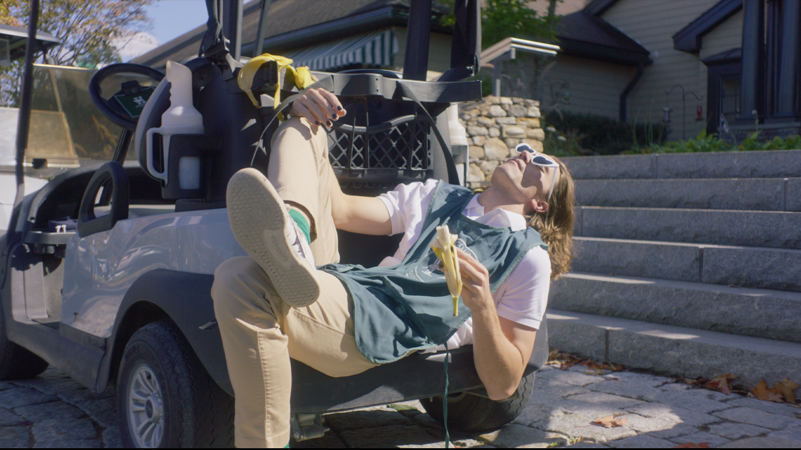

'Mooch' Set to Premiere at Rejecta — Sources Call It a Cry for Help in Feature Film Form
Described by its creators as "a chaotic blend of emo, ego, and existential dread," Mooch will make its world debut at Rejecta, likely in front of an audience of confused tourists and emotionally exhausted filmmakers.
The film stars Jeff Ryan, a man so committed to independent cinema that he reportedly turned down a Target commercial just to stay "indie." Rejecta programmers call the film "a tribute to artistic self-sabotage," while a source close to the director says, "he’s just working through some stuff."
The premiere is scheduled for June 8th, 2025, across the street from Tribeca. Lawn chairs encouraged. RSVP strongly recommended.